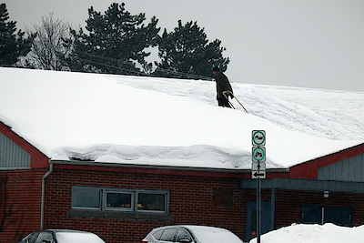

Nous avons eu encore de la neige ! Certains me diront que c’est de saison, et ils n’auront certainement pas tort. Ce qui n’empêche pas certaines autres personnes, dont je suis, de s’en plaindre.

Et qui dit neige et température fort clémente, dit que c’est le temps de penser à déneiger nos toits, vu que la généreuse couche de neige qui s’y est installé au fur et à mesure que l’hiver avançait va commencer à s’imbiber d’eau et donc à devenir de plus en plus lourde. Nos maisons ont beau être construites pour en prendre, mais il ne faut pas les confondre avec des abris anti-atomiques. Elles ont des limites structurelles qu’il vaut mieux ne pas tester. De temps à autre, on apprend qu’un toit n’en pouvait plus et qu’il a décidé de visiter le rez-de-chaussée. Sauf que j’ai remarqué que, en règle générale, on dirait plutôt que cela s’adresse aux édifices commerciaux ou publics, et guère aux résidences familiales. Remarquez bien que j’ai dit en règle générale, et surtout que ce n’est qu’une impression que j’en ai et qu’il est fort possible que si je mettais la main sur des chiffres officiels ma vision des choses pourrait en changer. M’enfin !
Dans un peu plus d’un mois, nous pourrons tomber le masque. Après avoir passé environ deux ans à se camoufler le visage en public, ça va faire du bien, vous pouvez m’en croire. C’était certes les concessions que nous devions faire pour combattre ce foutu virus qui a tellement chamboulé nos vies. C’était chiant au début, mais on s’est habitués. Sauf pour certains individus qui font partie des « Moi, moi, moi », et qui ne peuvent admettre avoir à faire des efforts qui pourraient nuire à leur petit confort, même si leur santé est mise en jeu. Je me rappelle au début alors qu’il y avait des gens qui se plaignaient qu’ils ne pouvaient plus aller au salon de coiffure (et il y a eu ceux qui se sentaient profondément lésées parce que les gyms étaient fermés, la liste pourrait être longue). Quelquefois les priorités des gens semblent être quelque peu étranges, pour ne pas dire mal placées. Il me semble que la vie devrait figurer au premier plan, ou à tout le moins pas mal haut dans l’échelle de nos valeurs. Et lorsque l’on préfère mettre sa vie en danger plutôt que de laisser tomber ses petites exigences mesquines…
Il semblerait que depuis cro-magnon, nous ayions peu évolués. C’est malheureux. On dit que la civilisation a vu le jour à Sumer, il y a… cinq mille ans je crois. Donc, nous pouvons compter sur au moins cinq mille ans de civilisation, de dite civilisation, car on continue à s’entre-tuer avec enthousiasme, à vouloir ce que le voisin a, ce que les voisins possèdent (dans le cas de pays ou toute autre agglomération d’humains). De quelque côté que l’on regarde cela, on ne voit pas une si grande évolution que cela, si évolution il y a. Un tantinet démoralisant, n’est-ce pas ?